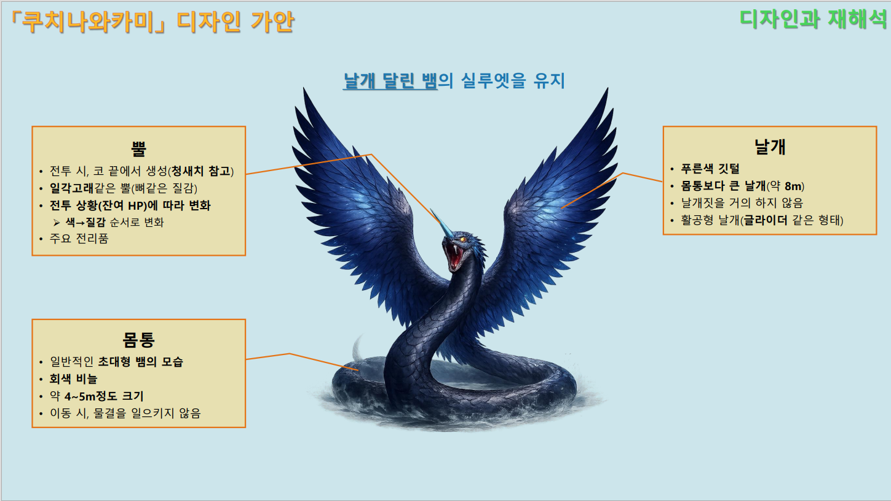
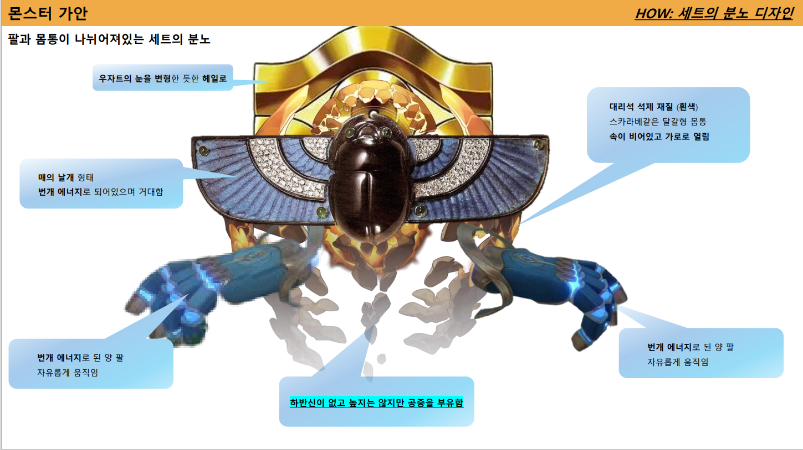
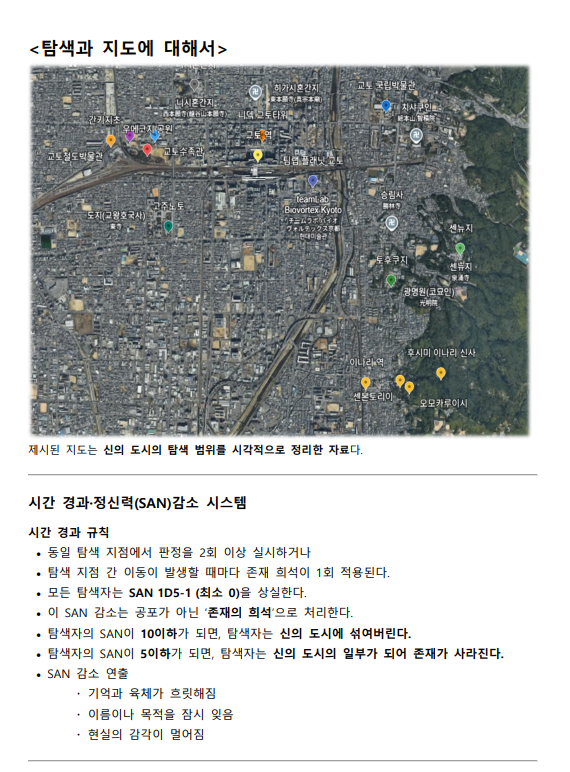

창작 기획 · 신화 재해석 · 보스 콘텐츠
쿠치니와카미 시나리오·보스 콘텐츠 기획
아이누 전승 「호야우카무이」를 바탕으로, 필드 보스의 외형·패턴·페이즈 구조와 단편 시나리오를 함께 설계한 창작 포트폴리오입니다.
보충 메모
완전 창작에 가까운 작업으로, 신화 모티브를 단순 설정이 아니라 전투 구조와 서사 콘텐츠로 연결하는 방향을 보여줍니다. 관련 단편 소설 「늪에서 다가오는 신」과도 연계됩니다.
Narrative Planner Portfolio
신화·민담·기존 IP의 캐릭터성과 세계관을 분석하고, 이를 시나리오·전투·데이터 구조로 재구성하는 작업을 중심으로 포트폴리오를 구성했습니다.
Featured Portfolio
핵심 강점과 직접 연결되는 대표 작업물입니다.

창작 기획 · 신화 재해석 · 보스 콘텐츠
아이누 전승 「호야우카무이」를 바탕으로, 필드 보스의 외형·패턴·페이즈 구조와 단편 시나리오를 함께 설계한 창작 포트폴리오입니다.
완전 창작에 가까운 작업으로, 신화 모티브를 단순 설정이 아니라 전투 구조와 서사 콘텐츠로 연결하는 방향을 보여줍니다. 관련 단편 소설 「늪에서 다가오는 신」과도 연계됩니다.

역기획 · 기존 IP 분석 · 세계관 이해
기존 스토리와 캐릭터 모티브, 보스 디자인을 분석하고, 설정·연출·전투 패턴의 연결 의도를 재구성한 역기획 포트폴리오입니다.
기존 IP의 세계관과 캐릭터 해석을 바탕으로 결과물의 기획 의도를 추적한 작업입니다. 블루 아카이브 이벤트 관련 기획서와, 타 게임 사례인 스타레일 퀘스트 기획과도 연결됩니다.

TRPG · 레퍼런스 활용 · 탐색형 시나리오
실제 교토 지형과 후시미이나리 신사, 일본 신화, 크툴루 신화를 참고해 탐색형 TRPG 시나리오로 구성한 작업입니다.
수집한 지역·신화 레퍼런스를 단순 배경 설명이 아니라 플레이어의 탐색 동선, 정보 개시, 선택 구조로 전환한 사례입니다. 참여한 TRPG 시나리오 리플레이 기록과도 연결됩니다.
역기획 · 보스 분석
기존 스토리와 캐릭터의 모티브를 분석하고, 보스 몬스터의 설정·디자인·전투 패턴을 재구성한 역기획 작업입니다.
기존 결과물을 분석하고, 의도와 결과물이 어떻게 연결되는지 정리하는 역기획 역량을 보여주는 자료입니다.
TRPG · 탐색형 시나리오
실제 교토 지형과 일본 신화, 크툴루 신화를 결합해 탐색형 시나리오로 구성한 작업입니다.
과도하게 수집된 지역 자료를 플레이어 선택지와 탐색 지점으로 전환한 경험을 보여줄 수 있습니다.
단편 시나리오 · 신화 모티브
호야우카무이 모티브에서 파생된 단편 시나리오입니다. 전투를 단순 토벌이 아닌 의례의 재현 과정으로 구성했습니다.
보스 콘텐츠의 모티브를 서사 콘텐츠로 확장하는 방식과 분위기 중심의 장면 구성력을 보여주는 자료입니다.
지원 과제형 샘플 · IP 분석
기존 실험체의 캐릭터성, 플레이 감각, 콘텐츠 구조를 바탕으로 짧은 상황극과 시나리오 콘텐츠 방향을 제안한 작업입니다.
정식 대표 포트폴리오보다는 기존 IP 캐릭터 해석과 콘텐츠 제안 역량을 보여주는 보조 자료로 배치합니다.
데이터 · 퀘스트 구조
퀘스트 조건, 대사, 보상, 전투 발생 조건을 테이블 단위로 정리하고 시나리오 흐름과 시스템 요소의 연결을 보여주는 작업입니다.
시나리오를 단순 문장으로 끝내지 않고, 실제 구현 단위에 가깝게 정리하려는 방향을 보여줍니다.
Analysis Blog
게임 리뷰, 캐릭터 분석, 콘텐츠 개선안, 짧은 기획 노트는 별도 블로그에 정리합니다. 포트폴리오 사이트에는 대표 작업물과 선별 링크를 중심으로 배치합니다.